Rendang
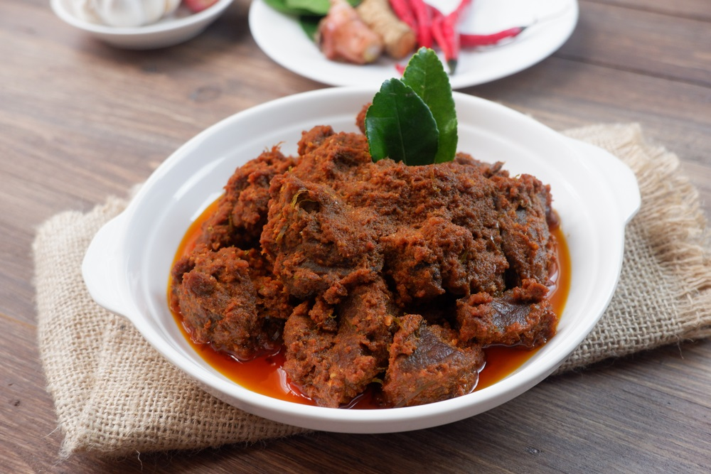
Masakan khas Minangkabau dari daging sapi dan rempah-rempah yang dimasak lama hingga kaya rasa.
Asal: Sumatera Barat
Bahan Utama:
- 1 kg daging sapi (bagian paha / sengkel), potong besar
- 1 liter santan kental (dari 2 butir kelapa)
- 2 lembar daun kunyit, simpulkan
- 4 lembar daun jeruk
- 2 batang serai, memarkan
- 2 lembar daun salam
- 1 ruas lengkuas, memarkan
Bumbu Halus:
- 10 siung bawang merah
- 6 siung bawang putih
- 5 buah cabai merah besar
- 10 buah cabai merah keriting (sesuai selera)
- 3 butir kemiri, sangrai
- 1 ruas jahe
- 1 ruas kunyit
Bumbu Tambahan:
- 1 sdm ketumbar bubuk
- 1 sdt jintan (opsional)
- Garam secukupnya
- Gula secukupnya
Cara Membuat:
- Haluskan semua bumbu halus hingga lembut.
- Masukkan santan ke dalam wajan besar, lalu tambahkan bumbu halus, serai, daun jeruk, daun salam, daun kunyit, dan lengkuas.
- Masak dengan api sedang sambil terus diaduk hingga santan mendidih dan tidak pecah.
- Masukkan potongan daging sapi, aduk rata.
- Masak dengan api kecil sambil sesekali diaduk hingga santan mengering dan bumbu meresap (±3–4 jam).
- Tambahkan garam dan gula, koreksi rasa.
- Masak terus hingga rendang berwarna cokelat gelap dan minyak keluar.
- Angkat dan sajikan rendang selagi hangat.
Ketoprak
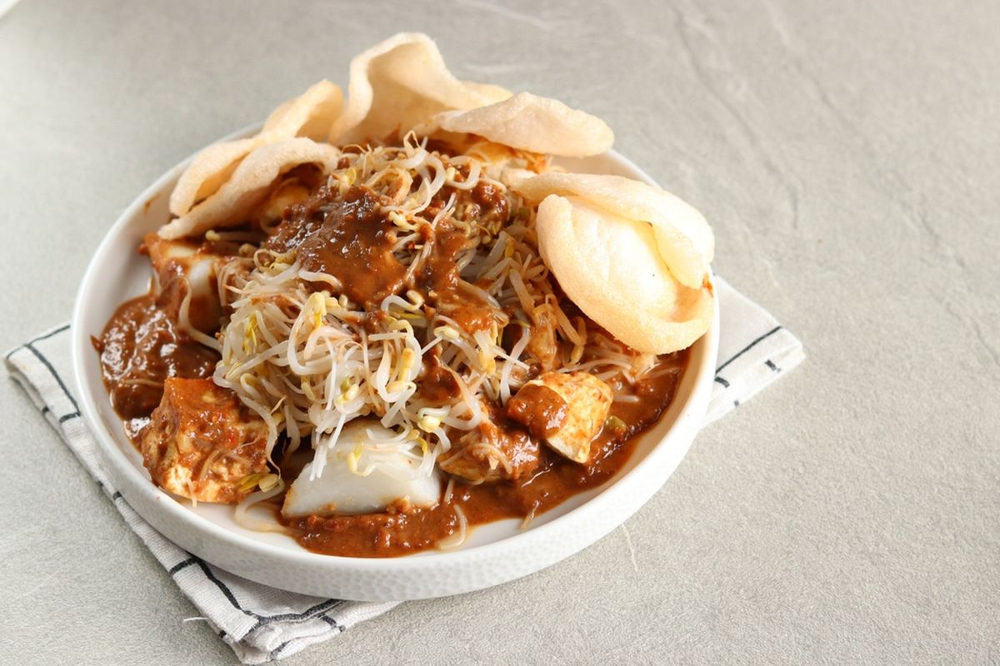
Ketoprak lezat ala Betawi, membuat harimu lebih bewarna dan lidahmu lebih bergoyang seru
Asal: Betawi
Bahan:
- 200 gram tahu goreng
- 100 gram toge, rebus sebentar
- 100 gram bihun rebus
- 2 buah ketupat
Saus Kacang:
- 100 gram kacang goreng yang dihaluskan
- 5 butir cabe rawit rebus (sesuai selera)
- 3 siung bawang putih
- 1 sdm gula merah
- 1 sdt garam
- ½ sdt penyedap rasa
- 100 ml air asam (100 ml air dengan ½ sdt asam jawa)
- 4 sdm kecap manis
Pelengkap:
- Bawang goreng
- Kerupuk bawang
- Telur dadar
- Timun
Cara Membuat:
- Goreng kacang tanah hingga matang. Haluskan dengan chopper atau manual.
- Celupkan potongan tahu ke larutan garam dan penyedap. Sambil menunggu tahu, kita bisa proses uleg bumbu ketoprak.
- Di atas piring, uleg dan campurkan kacang yang sudah dihaluskan, cabe rawit rebus sesuai selera, bawang putih mentah, gula
- Di atas piring, uleg dan campurkan kacang yang sudah dihaluskan, cabe rawit rebus sesuai selera, bawang putih mentah, gula merah, garam, penyedap dan air asam jawa.
- Goreng tahu hingga berkulit sebagian. Rebus juga toge dan bihun.
- Letakkan tahu, ketupat, toge, dan bihun, beri kecap manis lalu aduk rata bumbu dan isian ketoprak.
- Sajikan dengan telur dadar, irisan timun, bawang goreng, dan kerupuk bawang.
Pempek
Rasakan sensasi Pempek asli Palembang: kulit kenyal, isi ikan lembut, dan saus cuko yang bikin ketagihan di setiap gigitan!
Asal: Palembang
Bahan:
- 500 gr ikan giling tenggiri
- 150-200 ml air es (sesuaikan)
- 250-300 gr tepung tapioka
- 1 butir telur
- 1/2 sdm garam
- 1/2 sdm gula
- 1/2 sdt penyedap
- 5 siung bawang putih
- 3 helai daun bawang
Cuko:
- 200-250 gr gula merah
- 500 ml air
- 6 buah cabe rawit
- 3 siung bawang putih
- 2 sdt garam
- 1 sdm asam jawa
Cara Membuat Pempek:
- Haluskan bawang putih dan iris daun bawang.
- Campurkan ikan tenggiri giling dengan bawang putih, garam, gula, dan penyedap.
- Masukan telur, aduk rata lalu tambahkan air sedikit demi sedikit.
- Tambahkan tepung tapioka sedikit sedikit, kemudian aduk perlahan hingga kalis.
- Masukan daun bawang dan aduk rata.
- Bentuk adonan sesuai selera (lenjer/bulat/kapal selam).
- Rebus dalam air mendidih sampai mengapung (±15-20 menit), angkat dan tiriskan.
- Goreng hingga kecokelatan sebelum disajikan.
Cara Membuat Cuko:
- Rebus air dan gula merah sampai larut.
- Haluskan cabai rawit dan bawang putih.
- Masukan bumbu halus, garam, dan asam jawa ke dalam air gula.
- Masak hingga mendidih dan sedikit mengental.
- Saring lalu sajikan bersama pempek.
Sate Lilit Bali
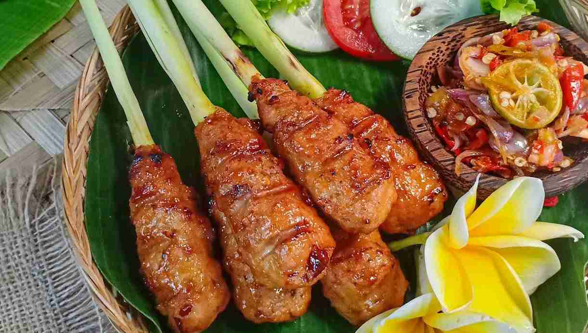
Satu gigitan sate lilit Bali, langsung berasa liburan ke Pulau Dewata—gurih, wangi, dan penuh rempah!
asal: Bali
Bahan:
- 500 gr ayam giling
- 80 ml Sasa Santan Omega 3
- 1 sdt garam
Bumbu Halus:
- 8 siung bawang merah
- 5 siung bawang putih
- 5 buah cabai keriting
- 3 buah cabai rawit
- 3 batang serai
- 1 ruas lengkuas
- 1 ruas kunyit
- 1 ruas jahe
- 1 ruas kencur
- 5 lembar daun jeruk
- 1 sdt ketumbar
- ½ sdt merica
Cara Membuat:
- Campurkan ayam, kelapa parut, gula merah, Sasa Santan Omega 3, garam, dan bumbu halus.
- Tempelkan adonan di tusuk sate pipihkan.
- Panggang hingga matang.
Pecel
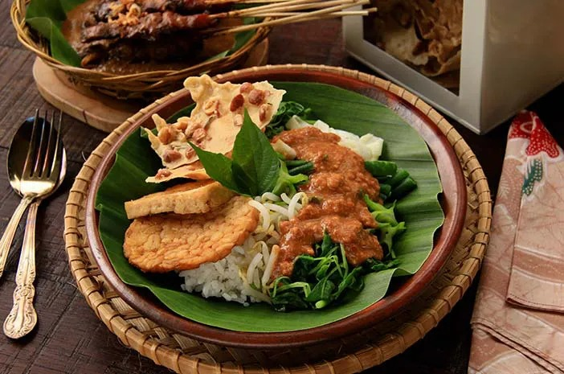
Nikmati pecel autentik Jawa dengan aneka sayuran rebus dan siraman sambal kacang khas yang kaya rempah dan cita rasa.
asal: Jawa Barat
Bahan Sayur:
- Bayam
- Kangkung
- Tauge
- Kacang panjang
- Daun singkong (opsional)
Bahan Bumbu Kacang:
- 250 g kacang tanah, goreng
- 3 siung bawang putih
- 5 buah cabai merah (sesuai selera)
- 3 lembar daun jeruk
- 2 cm kencur
- 1 sdt asam jawa
- 1–2 sdm gula merah, sisir
- Garam secukupnya
- Air hangat secukupnya
Cara Membuat:
- Haluskan kacang tanah, bawang putih, cabai, daun jeruk, dan kencur.
- Tambahkan gula merah, asam jawa, dan garam.
- Tuang air hangat sedikit demi sedikit sampai saus kental.
- Tata sayuran di piring, siram sambal kacang di atasnya.
Laksa
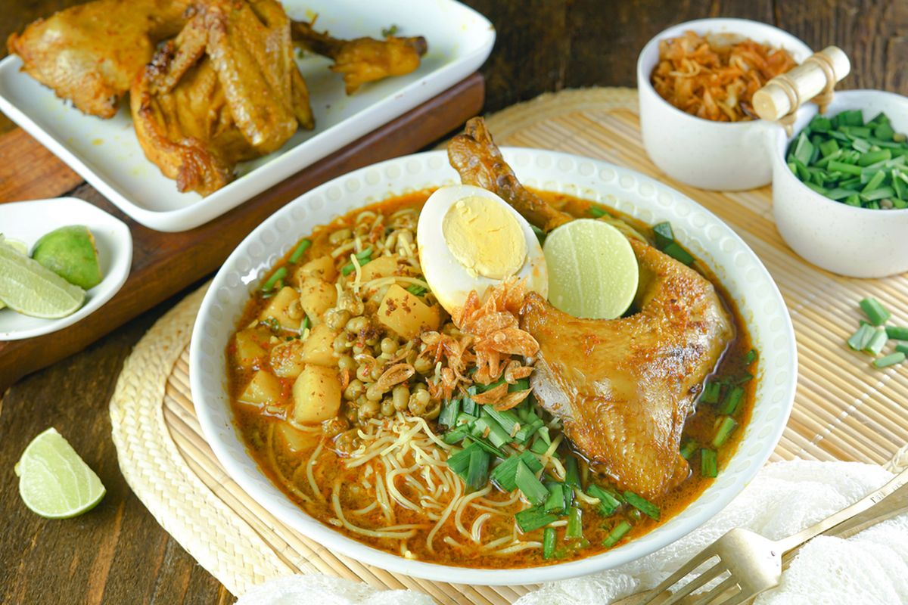
Dari kuahnya yang harum hingga suapan terakhir yang membuat rindu, itulah laksa.
asal: Banten
Bahan Utama:
- 200 gr mie laksa
- 100 gr kelapa parut (sudah disangrai)
- 150 gr kacang hijau (sudah direbus)
- 4 potong ayam
- 1 buah kentang (potong kotak kecil)
- 2 lembar daun salam
- Garam
- Lada
- 1.5 liter santan
- 2 butir telur rebus
- 2 lembar daun kucai
Bumbu halus:
- 8 siung bawang merah
- 6 siung bawang putih
- 5 buah cabai merah (sesuai selera)
- 1 sdt ketumbar bubuk
- 2 ruas jahe
- 1 sdt asam jawa
- 1 ruas lengkuas
- 1 sdt kunyit bubuk
Cara Membuat:
- Tumis bumbu halus hingga harum.
- Masukan kelapa sangrai, aduk rata.
- Masukan ayam dan santan.
- Masukan daun salam.
- Saat ayam sudah setengah matang, masukan kentang.
- masukan garam, lada dan koreksi rasa.
- Saat ayam sudah matang, angkat dan sisihkan untuk di panggang.
- Masukan kembali ayam ke dalam kuah, lalu tambahkan kacang hijau.
- Tunggu hingga bumbu meresap dan air sedikit berkurang, lalu matikan api.
- Tata mie laksa di atas mangkuk, tambahkan potongan ayam dan telur rebus, lalu siram dengan kuah.
- Tambahkan potongan daun kucai dan laksa siap dinimkati.
Sate padang
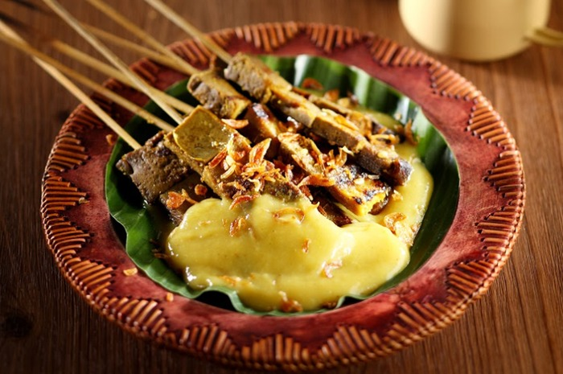
Rasakan kelezatan sate Padang khas Minang: daging empuk disiram saus kental berbumbu rempah yang kaya rasa dan pedasnya bikin nagih.
asal: Minangkabau
Bahan:
- 1 kg daging sapi (pilih bagian yang tidak berlemak)
- 50 ml kecap manis
- 2 sdm minyak goreng
- 2 siung bawang putih, haluskan
- 1 sdt merica bubuk
- 1 sdt garam
- 1 sdt ketumbar bubuk
- 1 sdt kunyit bubuk
- 1 sdt cabe bubuk (opsional, sesuaikan dengan tingkat kepedasan yang diinginkan)
- 10 tusuk sate
Cara Membuat:
- Persiapkan bahan-bahan marinasi, termasuk bumbu-bumbu seperti bawang merah, bawang putih, jahe, serai, dan rempah-rempah lainnya.
- Haluskan bumbu-bumbu tersebut dengan menggunakan blender atau ulekan sampai membentuk pasta yang halus.
- Campurkan bumbu yang telah dihaluskan dengan bahan lainnya, seperti kecap manis, minyak, dan perasa lainnya.
- Ambil daging yang sudah dipotong-potong menjadi ukuran sate, dan rendam dalam campuran bumbu marinasi tersebut. Marinasi hingga 2 jam.
- Tusuk daging yang telah dimarinasi ke tusuk sate.
- Panggang di atas bara api atau panggangan hingga matang dan berwarna kecoklatan.
Kerak telur
makanan legendaris dengan lapisan ketan renyah, telur gurih dan taburan kelapa sangrai yang harum.
asal: Jakarta
Bahan:
- 100 gr beras ketan putih (rendam 1 jam, tiriskan)
- 2 butir telur ayam / bebek
- 2 sdm ebi (rendam & haluskan)
- 2 sdm kelapa parut sangrai
- 1 sdm bawang goreng
- Garam dan merica secukupnya
Cara Membuat:
- Panaskan wajan anti lengket, beri sedikit minyak.
- Masukan 2-3 sdm ketan, ratakan tipis.
- Kocok telur, masukan ebi, garam, dan merica, tuang di atas ketan.
- Masak sampai bagian bawah kering dan renyah.
- Balik wajan atau tutup sampai matang.
- Taburi kelapa sangrai & bawang goreng, kerak telur siap dinikmati.
Kolak
Ubi empuk, pisang lembut, kuah santan manis—siap bikin nambah tanpa sadar!
Asal: Pulau Jawa
Bahan-Bahan:
- 5 buah pisang kepok / pisang raja (potong serong)
- 1 buah ubi jalar (potong dadu)
- 100–150 gr gula merah (iris halus)
- 2 sdm gula pasir (sesuai selera)
- 1 liter santan
- 2 lembar daun pandan (ikat simpul)
- Sejumput garam
- 700 ml air
Cara Membuat:
- Rebus air bersama gula merah dan daun pandan sampai gula larut.
- Masukkan ubi, rebus sampai setengah empuk.
- Tambahkan pisang, masak sampai ubi dan pisang empuk.
- Tuangkan santan, aduk perlahan agar tidak pecah.
- Tambahkan gula pasir dan sedikit garam.
- Masak dengan api kecil sambil diaduk sampai mendidih perlahan.
- Koreksi rasa, lalu matikan api.
Soto Ayam Lamongan

Kuah kuning yang gurih dengan taburan koya yang bikin nagih.
asal: Lamongan Jawa Timur
Bahan Utama:
- 1 ekor ayam
- 2 liter air
- 2 batang serai (digeprek)
- 3 lembar daun salam
- 2 lembar daun jeruk
- 1 batang daun bawang (diiris)
- Garam dan gula secukupnya
Bumbu halus:
- 6 siung bawang merah
- 4 siung bawang putih
- 2 buah kunyit dan jahe
- 3 butir kemiri sangrai
- 1 sdt ketumbar
- 1 sdt merica
Pelengkap:
- Bihun (seduh air panas)
- Kol (yang sudah diiris)
- Telur rebus
- Bawang goreng
- Jeruk nipis
- Sambal
Koya:
- 3 sdm kerupuk udang
- 1 sdm bawang putih goreng (blender kering)
Cara Membuat:
- Rebus ayam sampai empeuk, angkat lalu suwir dagingnya, sisihkan kaldunya.
- Tumis bumbu halus, masukan serai, daun dalam dan daun jeruk sampai harum.
- Masukan tumisan ke dalam kaldu ayam, masak 10-15 menit.
- Tambahkan garam dan gula, lalu masukan ayam suwir dan daun bawang.
- Siapkan mangkuk, isi dengan bihun, kol, ayam suwir, lalu siram dengan kuah panas.
- Taburi koya dan bawang goreng, beri perasan jeruk nipis, soto siap disajikan.
Serabi Solo
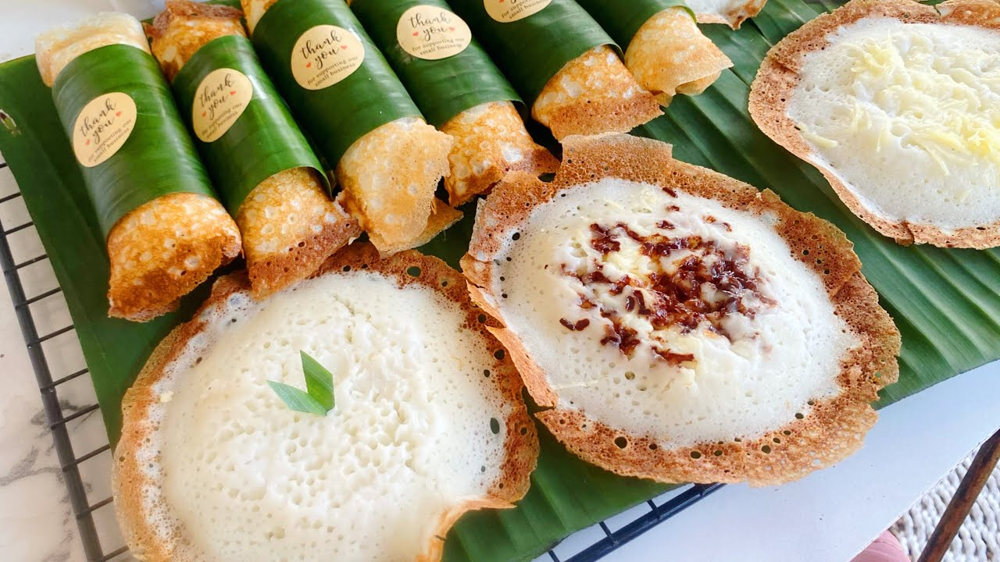
lembut, legit dan hangat di hati. Sederhana tapi selalu bikin ingin tambah lagi.
asal: Surakarta Jawa Tengah
Bahan:
- 200 gr tepung beras
- 2 sdm tepung terigu
- 500 ml santan hangat
- 2 sdm gula pasir
- 1 sdt garam
- 1 butir telur
- 1 sdt ragi instan
Cara Membuat:
- Campur tepung beras, terigu, gula, garam, dan ragi.
- Masukan telur dan santan sedikit demi sedikit, aduk hingga halus.
- Diamkan adonan 30-60 menit sampai sedikit berbuih.
- Panaskan teflon kecil, tuang adonan tipis.
- Tambahkan topping (opsional).
- Masak dengan api kecil sampai matang (tidak perlu dibalik).
- Serabi siap disajikan.
Getuk
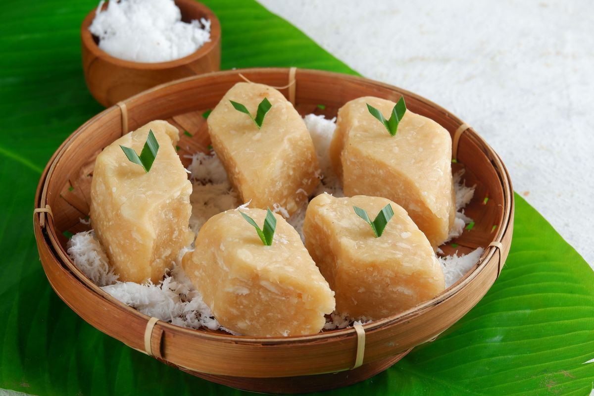
Singkong halus, gula merah manis, kenangan manis pun hadir di tiap gigitan.
Asal: Magelang
Bahan-Bahan:
- 500 gr singkong, kupas dan potong-potong
- 100 gr gula merah (iris halus)
- 50 gr kelapa parut, kukus sebentar
- Sejumput garam
- 1 sdm mentega (opsional, buat aroma lebih gurih)
Cara Membuat:
- Rebus singkong hingga empuk, tiriskan.
- Haluskan singkong dengan ulekan atau tumbuk sampai lembut.
- Campur gula merah yang sudah diiris ke singkong halus, aduk rata.
- Tambahkan sedikit garam dan mentega, aduk lagi sampai tercampur.
- Bentuk sesuai selera (bulat, kotak, atau dipipihkan).
- Taburi kelapa parut kukus di atasnya.
- Sajikan hangat atau suhu ruang.
Bubur Sumsum
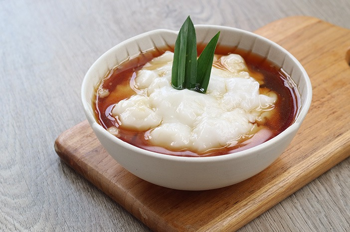
Semangkuk bubur sumsum, rasa tradisional yang bikin hati tenang
Asal: Pulau Jawa
Bahan-Bahan:
- 100 gr tepung beras
- 600 ml santan (dari 1 butir kelapa)
- Sejumput garam
Saus Gula Merah:
- 100 gr gula merah, serut halus
- 100 ml air
- 1 lembar daun pandan
Cara Membuat:
- Bubur Sumsum: Campur tepung beras, santan, dan sejumput garam. Masak dengan api sedang sambil diaduk perlahan sampai mengental. Tuang di mangkuk saji.
- Saus Gula Merah: Rebus air, gula merah, dan daun pandan sampai gula larut. Saring jika perlu.
- Penyajian: Siram saus gula merah di atas bubur sumsum. Sajikan hangat atau dingin sesuai selera.
Wajik Ketan
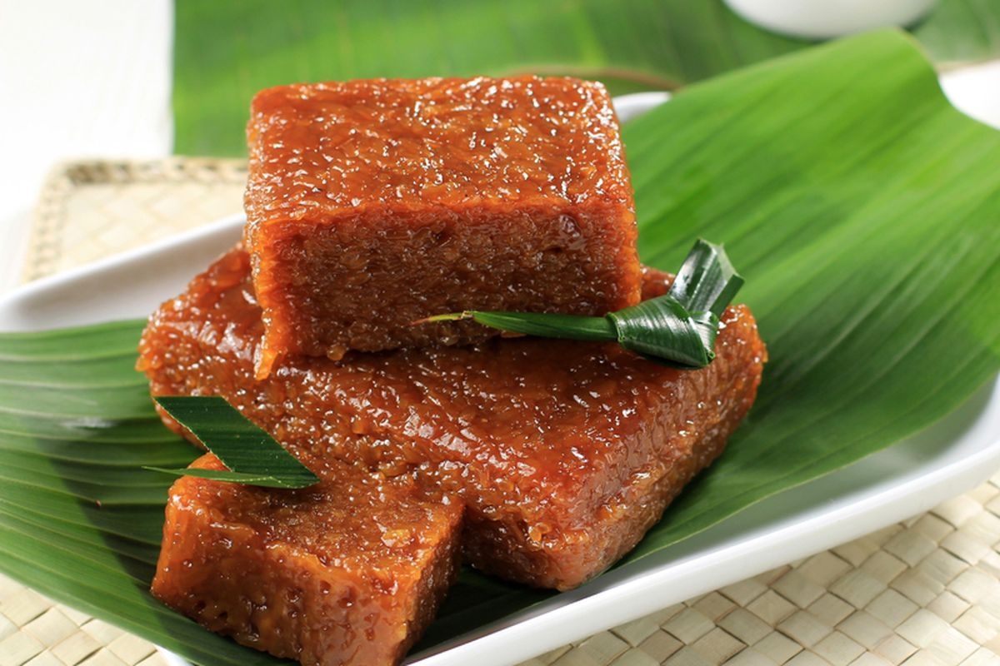
Camilan tradisional ketan manis yang legit, aroma gula merahnya bikin rindu masa kecil!
Asal: Sumatera Utara / Jawa / Aceh
Bahan-bahan:
- 250 gr ketan, rendam 3 jam, tiriskan
- 200 gr gula merah, sisir halus
- 200 ml santan kental
- 1 lembar daun pandan
- Sejumput garam
Cara Membuat:
- Kukus ketan hingga matang, sisihkan.
- Masak gula merah dengan santan, garam, dan daun pandan hingga larut dan mendidih.
- Masukkan ketan kukus, aduk rata hingga santan dan gula meresap ke dalam ketan.
- Masak dengan api kecil sambil terus diaduk hingga adonan kental dan lengket.
- Tuang ke loyang, ratakan, tekan perlahan. Biarkan dingin, kemudian potong-potong sesuai selera.
Wajik Ketan
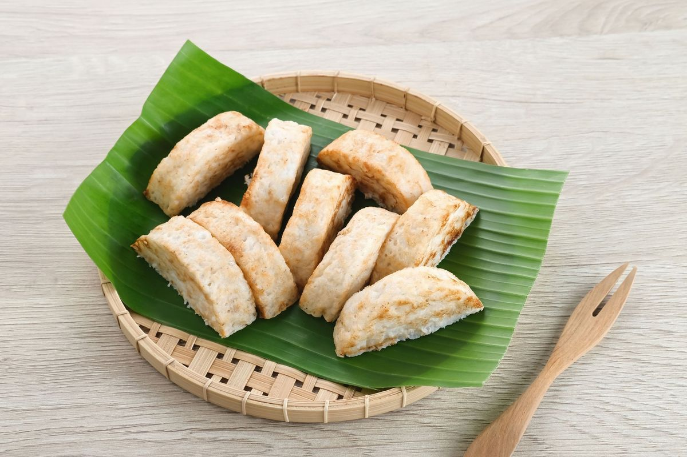
Kue tradisional Betawi/Jawa Barat, harum santan, lembut dan manis pas di mulut!
Asal: Betawi / Jawa Barat
Bahan-bahan:
- 200 gr tepung beras
- 100 gr kelapa parut
- 150 ml santan
- 50 gr gula pasir (sesuai selera)
- Sejumput garam
- Minyak untuk olesan cetakan
Cara Membuat:
- Campur tepung beras, kelapa parut, gula, garam, dan santan hingga menjadi adonan kental.
- Panaskan cetakan kue pancong, oles dengan sedikit minyak.
- Tuang adonan ke cetakan, jangan terlalu penuh.
- Panggang dengan api sedang hingga permukaan kecokelatan dan matang.
- Angkat dan sajikan hangat. Bisa dinikmati polos atau taburan gula halus.